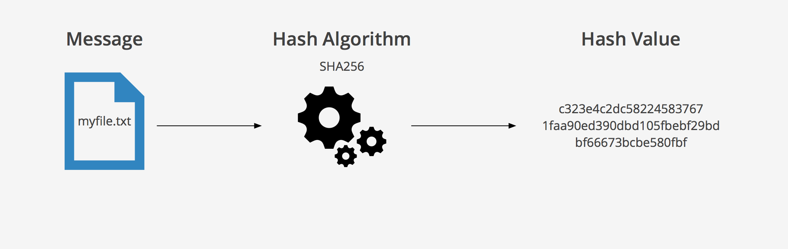

Czym jest hashing
Hashing to proces przekształcania danych (np. tekstu, pliku) na unikalny ciąg znaków o stałej długości, zwany hashem. Jest to funkcja jednokierunkowa, co oznacza, że niemożliwe jest odzyskanie oryginalnych danych na podstawie hasha. Hashing jest szeroko stosowany w bezpieczeństwie komputerowym, np. w przechowywaniu haseł, gdzie zamiast przechowywać same hasła, system zapisuje tylko ich hashe.
Jak to działa
Skupmy się na SHA-256, jednym z najbezpieczniejszych algorytmów haszujących. SHA-256 przetwarza dane wejściowe w blokach o rozmiarze 512 bitów, wykonując serię operacji matematycznych (np. przesunięcia bitowe i operacje logiczne). Na końcu generuje 256-bitowy hash, który jest unikalnym skrótem danych wejściowych. Jest odporny na kolizje i nieodwracalny, co oznacza, że nie da się odzyskać oryginalnych danych na podstawie hasha.

Gdzie SHA-256 znajduje zastosowanie
SHA-256 jest używane w wielu codziennych sytuacjach, w których zależy nam na bezpieczeństwie i integralności danych:
1. Bezpieczne logowanie: Gdy logujesz się na stronach internetowych, Twoje hasło jest często haszowane za pomocą SHA-256, co zapewnia, że Twoje dane nie są przechowywane w postaci tekstu jawnego.
2. Weryfikacja pobranych plików: Po pobraniu pliku z internetu, możesz sprawdzić jego integralność, porównując jego hash SHA-256 z tym podanym przez stronę – jeśli się zgadzają, oznacza to, że plik nie został zmieniony.
3. Transakcje online: Podczas zakupu online, systemy płatności często wykorzystują SHA-256 do zapewnienia bezpieczeństwa transakcji, tworząc unikalny hash dla każdej operacji, co zapobiega jej manipulacji.
4. Kopie zapasowe: Programy do tworzenia kopii zapasowych mogą używać SHA-256 do weryfikacji, czy kopie danych są identyczne z oryginałem i czy nie zostały uszkodzone podczas transferu lub przechowywania.